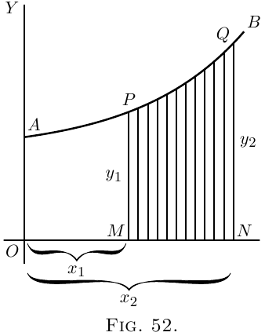
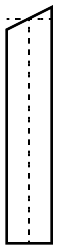

Seja $AB$ (Figura 52) uma curva, cuja equação é conhecida. Isto é, $y$ nessa curva é alguma função conhecida de $x$. Pense em um trecho da curva do ponto $P$ ao ponto $Q$.
Deixe cair uma perpendicular $PM$ a partir de $P$, e outra $QN$ a partir do ponto $Q$. Então chame $OM = x_1$ e $ON = x_2$, e as ordenadas $PM = y_1$ e $QN = y_2$. Assim demarcamos a área $PQNM$ que fica por baixo do trecho $PQ$. O problema é: como podemos calcular o valor dessa área?
O segredo de resolver esse problema é conceber a
área como dividida em um monte de faixas estreitas,
cada uma com largura $dx$. Quanto menor tomarmos $dx$,
maior será o número delas entre $x_1$ e $x_2$. Ora, a
área total é claramente igual à soma das áreas de
todas essas faixas. Nosso negócio será então
descobrir uma expressão para a área de qualquer
faixa estreita, e integrá-la de modo a somar todas
as faixas. Agora pense em qualquer uma das faixas.
Será assim:
limitada entre dois lados verticais, com fundo
plano $dx$, e com um topo ligeiramente curvo e
inclinado.
 Suponha que tomemos sua altura média
como sendo $y$; então, como sua largura é $dx$, sua
área será $y\, dx$. E vendo que podemos tomar a
largura tão estreita quanto quisermos, se a
tomarmos estreita o bastante sua altura média será
a mesma que a altura no meio dela. Agora chamemos o
valor desconhecido da área total de $S$,
significando superfície. A área de uma faixa será
simplesmente um pedaço da área total, e pode
portanto ser chamada $dS$. Assim podemos escrever
\[
\text{área de $1$ faixa} = dS = y · dx.
\]
Se então somarmos todas as faixas, obtemos
\[
\text{área total $S$} = \int dS = \int y\, dx.
\]
Assim, achar $S$ depende de podermos
integrar $y · dx$ no caso particular, quando sabemos
qual é o valor de $y$ como função de $x$.
Por exemplo, se lhe disserem que para a curva em
questão $y = b + ax^2$, sem dúvida você poderia pôr
esse valor na expressão e dizer: então devo achar
$\int (b + ax^2)\, dx$.
Tudo muito bem; mas um pouco de reflexão mostrará
que algo mais precisa ser feito. Porque a área que
estamos tentando achar não é a área sob o
comprimento inteiro da curva, e sim apenas a área
limitada à esquerda por $PM$ e à direita por $QN$,
segue que devemos fazer algo para definir nossa
área entre esses “limites”.
Isso nos introduz a uma noção nova, a saber a de
integrar entre limites. Supomos que $x$ varie, e
para o propósito presente não precisamos de nenhum
valor de $x$ abaixo de $x_1$ (isto é $OM$), nem de
nenhum valor de $x$ acima de $x_2$ (isto é $ON$). Quando
uma integral deve ser assim definida entre dois
limites, chamamos o menor dos dois valores de
limite inferior, e o valor superior de limite
superior. Qualquer integral assim limitada
designamos como uma integral definida, a fim de
distinguí-la de uma integral geral à qual não se
atribuem limites.
Nos símbolos que dão instruções para integrar, os
limites se marcam colocando-os no alto e embaixo,
respectivamente, do sinal de integração. Assim a
instrução Às vezes a coisa se escreve de modo mais simples Olhe de novo a Figura 52. Suponha que pudéssemos
achar a área sob o trecho maior da curva de $A$ a
$Q$, isto é de $x = 0$ a $x = x_2$, chamando a área de
$AQNO$. Depois, suponha que pudéssemos achar a área
sob o trecho menor de $A$ a $P$, isto é de $x = 0$ a
$x = x_1$, a saber a área $APMO$. Se então
subtraíssemos a área menor da maior, sobraria como
resto a área $PQNM$, que é o que queremos. Aqui
temos a pista do que fazer; a integral definida
entre os dois limites é a diferença entre a
integral calculada para o limite superior e a
integral calculada para o limite inferior.
Vamos então em frente. Primeiro, ache a integral
geral assim:
Fazendo a integração em questão pela regra, obtemos
\[ bx + \frac{a}{3} x^3 + C; \] e esta será a área inteira de $0$ até qualquer valor de $x$ que atribuirmos.Portanto, a área maior até o limite superior $x_2$ será
\[ bx_2 + \frac{a}{3} x_2^3 + C; \] e a área menor até o limite inferior $x_1$ será \[ bx_1 + \frac{a}{3} x_1^3 + C. \]Agora, subtraia a menor da maior, e obtemos para a área $S$ o valor
\[ \text{área $S$} = b(x_2 - x_1) + \frac{a}{3}(x_2^3 - x_1^3). \]Esta é a resposta que queríamos. Demos alguns valores numéricos. Suponha $b = 10$, $a = 0.06$, e $x_2 = 8$ e $x_1 = 6$. Então a área $S$ é igual a
\[ \begin{gathered} 10(8 - 6) + \frac{0.06}{3} (8^3 - 6^3) \\ \begin{aligned} \\ &= 20 + 0.02(512 - 216) \\ &= 20 + 0.02 × 296 \\ &= 20 + 5.92 \\ &= 25.92. \\ \end{aligned} \end{gathered} \]Ponhamos aqui um modo simbólico de enunciar o que averiguamos sobre limites:
\[ \int^{x=x_2}_{x=x_1} y\, dx = y_2 - y_1, \] onde $y_2$ é o valor integrado de $y\, dx$ correspondente a $x_2$, e $y_1$ o correspondente a $x_1$.Toda integração entre limites exige que se ache assim a diferença entre dois valores. Note também que, ao fazer a subtração, a constante acrescentada $C$ desapareceu.
Exemplos
(1) Para nos familiarizarmos com o processo,
tomemos um caso cuja resposta já conhecemos de
antemão. Achemos a área do triângulo (Figura 53),
que tem base $x = 12$ e altura $y = 4$. Já sabemos de
antemão, por mensuração óbvia, que a resposta virá
$24$.
Agora, aqui temos como “curva” uma reta inclinada
para a qual a equação é A área em questão será Integrando $\dfrac{x}{3}\, dx$ (aqui), e pondo o valor da
integral geral entre colchetes com os limites
marcados em cima e embaixo, obtemos
\[
\begin{aligned}
\text{área}\;
&= \left[ \frac{1}{3} · \frac{1}{2} x^2 \right]^{x=12}_{x=0} + C \\
&= \left[ \frac{x^2}{6} \right]^{x=12}_{x=0} + C \\
&= \left[ \frac{12^2}{6} \right] - \left[ \frac{0^2}{6} \right] \\
&= \frac{144}{6} = 24.\quad \text{Resp.}
\end{aligned}
\]
Satisfaçamo-nos quanto a este truque de cálculo
um tanto surpreendente, testando-o em um exemplo
simples. Pegue um papel quadriculado, de preferência
um que seja regido em quadradinhos de um oitavo de
polegada ou um décimo de polegada em cada direção.
Nesse papel quadriculado plote o gráfico da
equação Os valores a plotar serão: